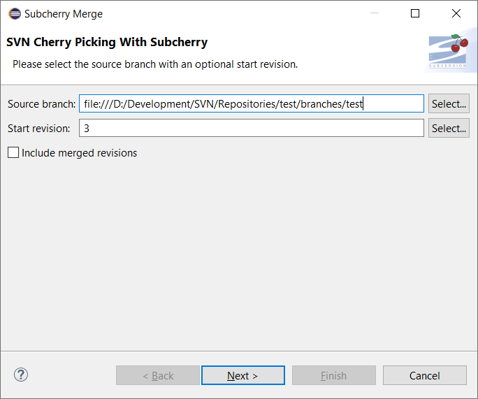
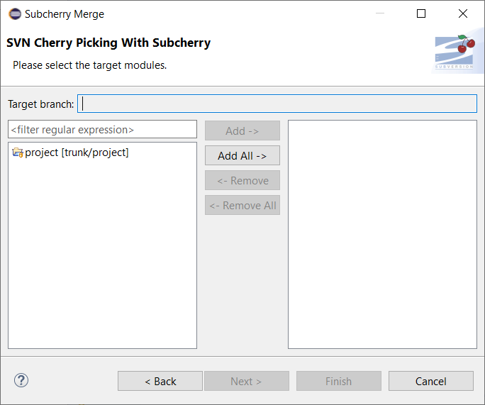
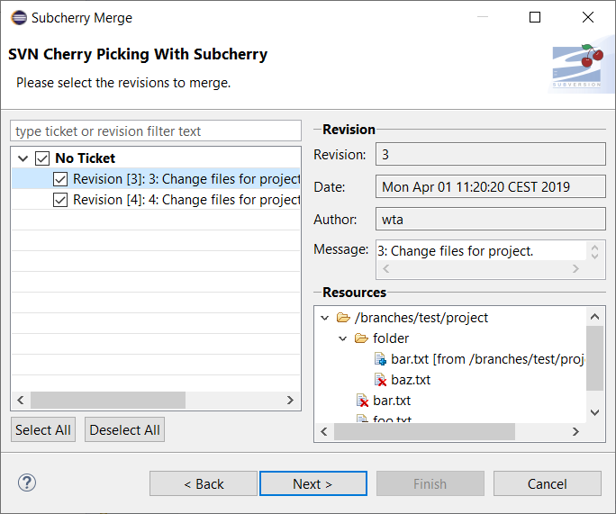
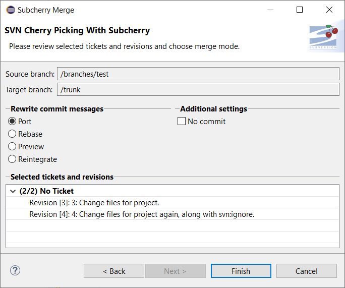

This chapter deals with the Subcherry Merge Wizard which guides users through the process of picking the right revisions (cherries) to be replayed. However, before opening the wizard, several requirements have to be met to ensure smooth revision replay with minimal user interaction.
In order to be able to pick revision for replay, the following conditions must be met prior to opening the Subcherry Merge Wizard:
In order to open the Subcherry Merge Wizard just press the button in the eclipse toolbar.  The newly opened dialog will prompt the user to select the source branch to replay the revisions from.
The branch, to replay the revision history from, can be either entered directly into the input field or selected using the Select... button. The branch name must match the branch pattern configured in preference settings.
This field prompts users for the starting revision from which (inclusive) to start reading the commit history of the selected source branch. This is quite helpful for branches with a very long revision history in cases when only a part of it is to be replayed.
When revisions are replayed, the process is logged using the svn:mergeinfo property on the module level. When reading the commit history of the selected source branch, already replayed revisions are excluded automatically. In order to prevent Subcherry from excluding these revisions this checkbox can be activated.
The next step after choosing the source branch is to select the modules for which to replay the commit history. This is done on the following page.  On the left, all open eclipse projects, checked out into the current workspace from the same SVN repository as the selected source branch, are listed. These projects represent modules in the branch structure. For workspaces with a large number of projects, the options list can be filtered using regular expressions. Single modules can be selected either by double-clicking the project or by selecting it and pressing the Add button. Pressing the Add All button selects all currently visible modules in the options list.
NOTE: Currently, replaying commit history is supported only for a single branch. Thus, selecting modules from different branches will result in an error message being displayed next to the Target branch field.
Once the source branch and target modules haven been selected, the commit history is computed while grouping revisions by the feature referenced in the commit message.  The above wizard page allows users to choose features to be replayed on the target branch computed from selected modules. Initially, all features with all their respective revisions are selected.
On the left, a tree view displays all features read from the commit history. The features' label is read from trac and matches the following format: Ticket #<id>: <summary>. Revisions, referencing features in their commit messages, are displayed as child nodes using the following label format: Revision [<number>]: <message>.
On the right, detailed information is displayed for the revision selected in the tree on the right. In addition to basic revision data such as id, date, author and message, a compressed tree view of changed Resources allows users to quickly decide whether the selected revision is replay-relevant or not.
For source branches with a long commit history, the feature tree on the left might become quite large. In such cases, a filter can be used to find and select relevant features and even revisions. The filter works as follows:
This page displays the selected Source branch and Target branch along with the Selected tickets and revisions. So, now that Subcherry knows what to replay and where, it's time to decide on the hows. 
In the Rewrite commit messages settings group, users can choose how Subcherry will handle commit messages of replayed revisions.
Enabling this setting will result in selected revisions being applied to the current workspace without being committed to the SVN repository. This way, a preview mode can be emulated in order to found out whether unresolvable conflicts may cause problems during replay.
Pressing the Finish button with close the dialog and open the Subcherry Merge View.